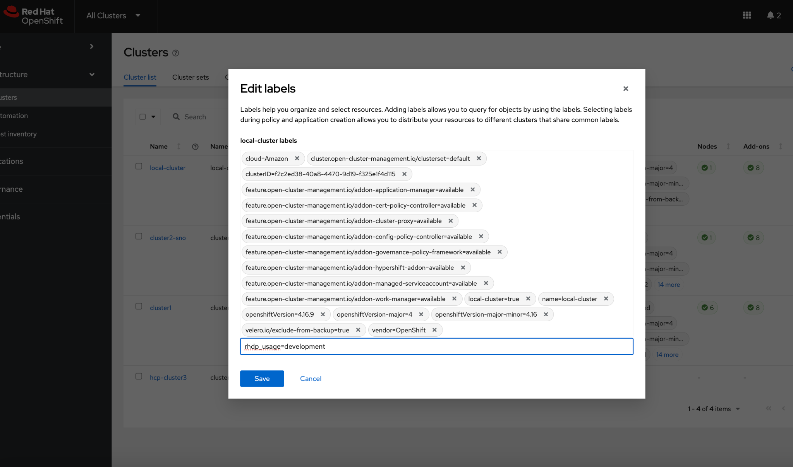
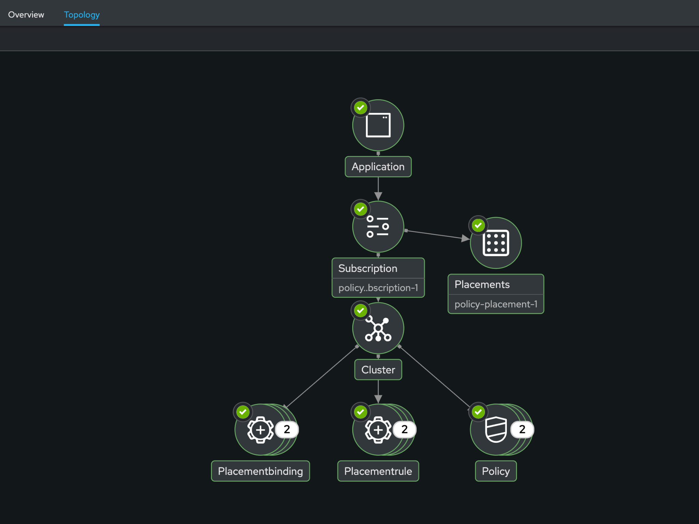
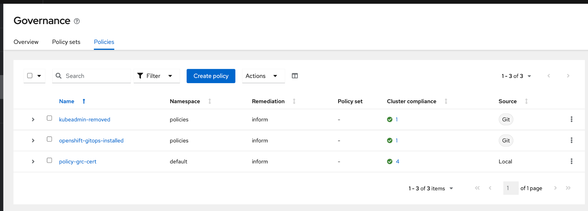
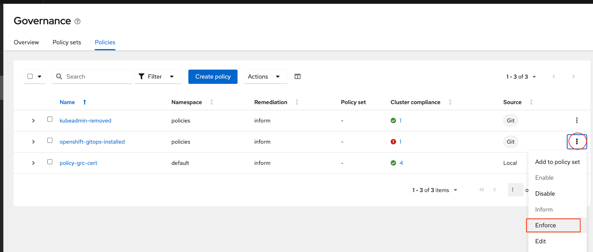

Installing GitOps with ACM
Deploying Policies with Policy Generator
This Policy Generator definition will achieve 2 configuration policies:
openshift-gitops-installed: The goal of the first one is to inform if the OpenShift GitOps operator is installed on managed clusters.
kubeadmin-removed: The goal of this second policy is to inform if the kubeadmin user is removed from managed clusters.
Both policies are informative only and will only execute them manually to showcase how to resolve issues.
In order to deliver these policies we will need to leverage the RHACM Application engine and the GitOps Subscription model.
Pre-requisite: Before we start, on the local-cluster, make sure to add a label if it’s not there yet: rhdp_usage=development

Let’s just do one more step: In the bastion machine, run this command below to make sure our lab user has the right permissions to create policies with policy generator:
cat << EOF | oc apply -f -
apiVersion: rbac.authorization.k8s.io/v1
kind: ClusterRoleBinding
metadata:
name: open-cluster-management:subscription-admin
roleRef:
apiGroup: rbac.authorization.k8s.io
kind: ClusterRole
name: open-cluster-management:subscription-admin
subjects:
- apiGroup: rbac.authorization.k8s.io
kind: User
name: kube:admin
- apiGroup: rbac.authorization.k8s.io
kind: User
name: system:admin
- apiGroup: rbac.authorization.k8s.io
kind: User
name: admin
EOFNow, in the ACM UI, navigate to Applications.
Click Create application, select Subscription. Enter the following information:
Name: policy-generator
Namespace: policy-generator
Under repository types, select the GIT repository
Branch: main
Under *Select cluster for application deployment, Select global clusterSet and Deploy only to local cluster
Label: name - equals any of - Value: local-cluster
Verify all the information is correct. Click Create
It will take a few minutes to deploy the application, Click on the Topology Tab to view and verify that all of the circles are green.

Navigate to the Governance menu.
Click on the Policies tab.
Verify that you see 2 policies:
kubeadmin-removed
openshift-gitops-installed

Notice that the kubeadmin and the openshift-gitops policies shows ✅ (compliant). This means there’s no kubeadmin password in this cluster, which is a best practice. And that OpenShift GitOps is installed. If you didn’t stall OpenShift GitOps manually through the Operator Hub, as stated in the previous section, the Governance would report a violation ❗.
If that’s the case, you can go ahead and enforce them.
On the openshift-gitops-installed policy, click on the ellipses and set policy to Enforce

Click the Enforce button to verify
Wait a few minutes and you will see that the Cluster Violations will
go from red to *green.
Click on the Policy and select Results. Verify that the GitOps operator has been installed.*
Feel free to repeat the steps with the kubeadmin-removed Policy, however if you enforce this in a cluster that has no other Identity provider configured, you won’t be able to access that cluster through the console as the only account created on these clusters is Kubadmin.
Now you have succesfully created a Policy leveraing the Policy Generator to scan your clusters, if you would like to play with other policies please visit the Policy Repo for more Policies you can test out.
Watch these 2 videos to learn
more
* RHACM Policy-based Governance Overview
* Upgrading OpenShift with RHACM Policies and the TALM operator.